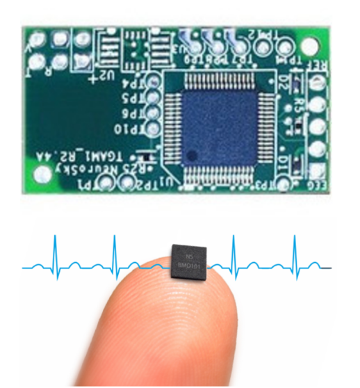
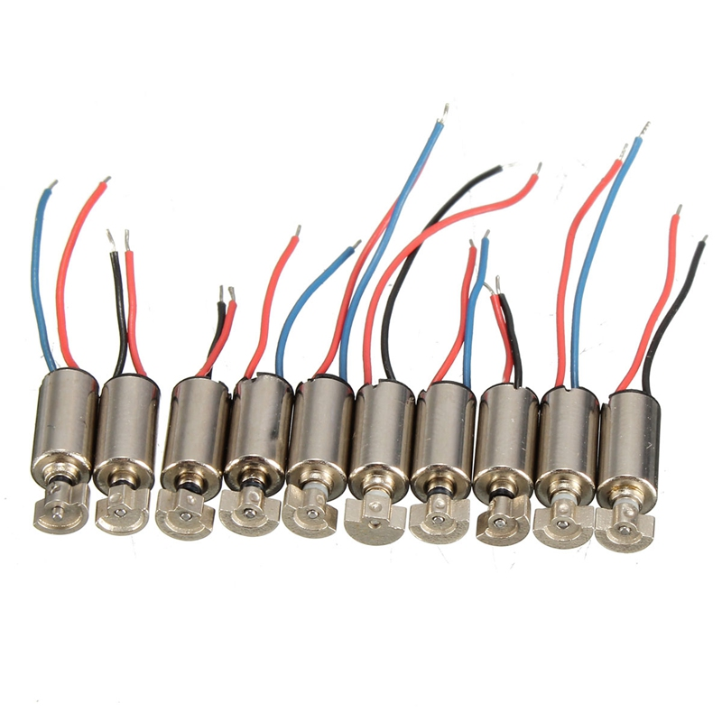
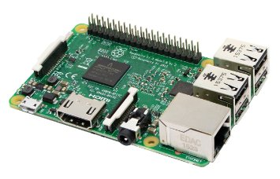

RobodyCare
Mind-Controlled Healthcare System with Biofeedback
Created for Big Ideas at Berkeley
Hello There
RobodyCare uses machine learning and efficient algorithms to improve people's mental and physical health.
The mind-controlled massager uses EEG brain waves, 3D printing and embedded systems to help both diagnosis and treatment of stress and chronic pain. It exemplifies the democratization of data-driven healthcare methods at low cost.
Current problem
We encounter numerous significant factors leading to stressful days.
According to the National Institutes of Mental Health, 75% of all individuals with depression and anxiety will first begin to experience these symptoms before the age of 22.
What can we do about it?
Several studies have shown that through massage therapy, specifically around the head region, individuals have reported feeling less depressed and angry, sleeping better, and having more energy and focus throughout their day.
Proposed innovation
We propose to create a new integrated biofeedback device, which will stimulate user’s head and other important acupuncture points on the user’s body in order to sooth the user both physically and mentally.
Hardware Composition
EEG and ECG Biosensors
From NeuroSky
Interpreted with machine learning

Vibrational Motors
Controlled by Raspberry Pi with Pulse-Width-Modulation
 3D Printed Motor Mounts
Flexible 3D printed casings, the current helmet design can be expanded to 3D printed clothing, where vibrational motors would be attached to where the acupuncture points are.
Proto-Prototype
Mind-Controlled Headmassager


Data driven
One of the further possible and exciting extensions of this project is the ability to help diagnose particular types of chronic pain.
With machine learning and efficient algorithms, we would be able to differentiate pain in different parts of the body, thus activate corresponding vibrational motors when certain types of pain is detected.
Team
Xiao Fu
Undergraduate student at UC Berkeley double majoring in Computer Science and Chemistry, minoring in philosophy. Xiao loves tinkering, and is experienced with Arduino, Raspberry Pi, 3D printing, laser cutting, embedded systems and Printed Circuit Board(PCB) design.
Ondrej Svec
Graduate student in Computer Science at Charles University in Prague, with concentration in Artificial Intelligence. Ondrej has been developing web applications since 2005 and has programmed a good deal of tailor-made systems since then. He is aware that technologies are evolving beasts and he tames them with his knowledge of Artificial Intelligence. C++, Java, Python, JavaScript, SQL
Alankrita Dayal
is a third-year undergraduate at the University of California-Berkeley, pursuing a double major in Computer Science and Business Administration and minors in Public Policy and South Asian Studies. She is extremely passionate towards finding solutions to better the lives of those in her community and over the past several years, has actively developed numerous hardware technologies that have allowed her to best do so! Alankrita offers her technical talent, diversity, and strategic thinking in our team.
Ngoc (Mai) Nguyen
PhD student in neuroendocrinology at UC Berkeley. Mai also holds a BS in microbiology from UC Berkeley, and have extensive understanding of neuroscience and EEG.
Thao Tran, Katie Huang
Undergraduate students at UC Berkeley in Psychology. Thao and Katie both have extensive understanding of cognitive neuropsychology, and are experienced with EEG interpretation.
Aniruddha Dayal
is a senior at the University of California-Los Angeles, pursuing a double major in Computer Science and Linguistics and minor in Mathematics. He is passionate about improving living conditions and enjoys developing, testing, and deploying technologies to maximize the benefits that he creates! Aniruddha brings in his software and hardware expertise as well as product management skillset.
Jean-Francois Jollivet
Graduate student in Electrical Engineering at Ecole des Mines de Paris (Paris Institute of Technology).